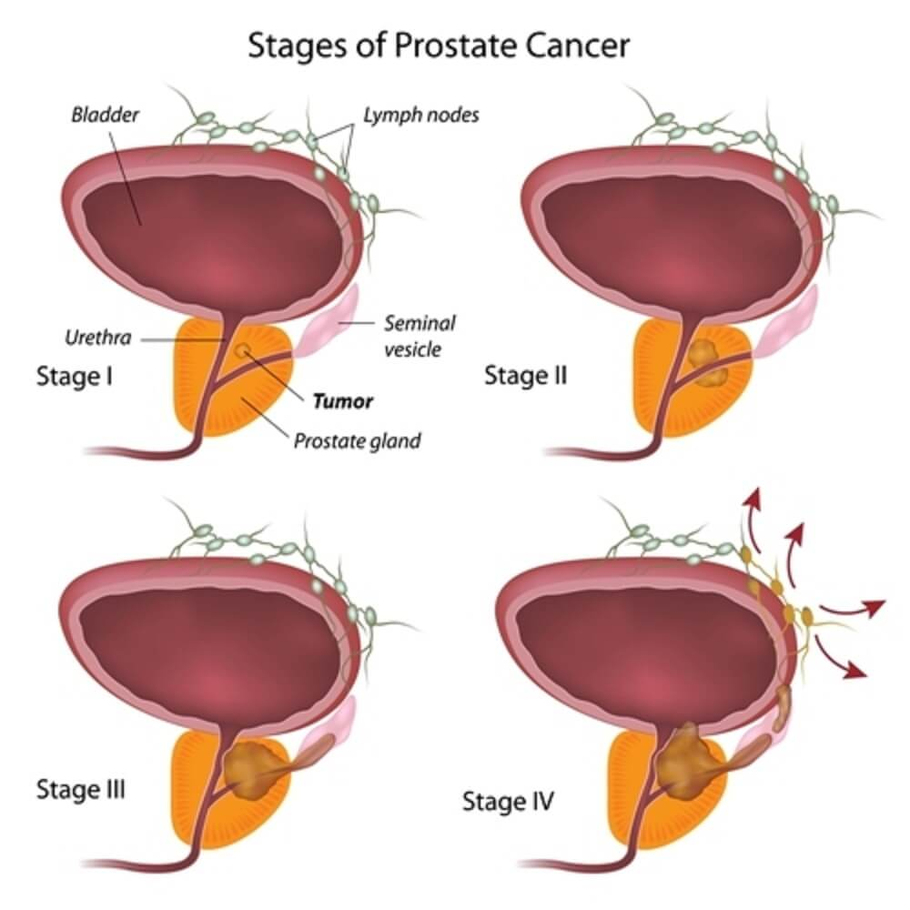
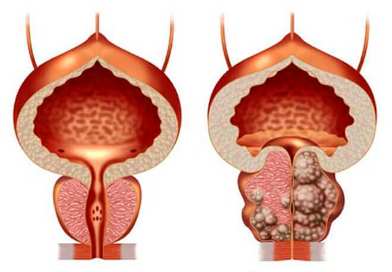
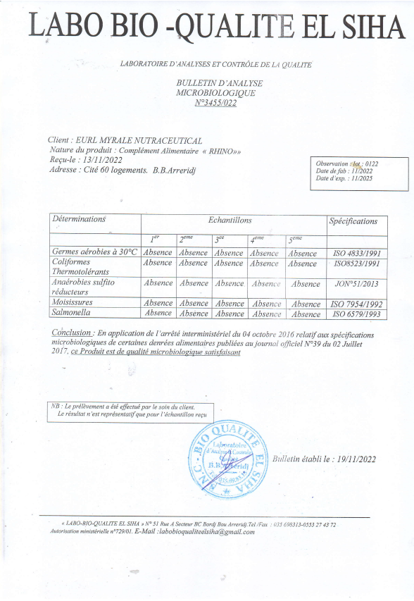

الطريقة الأفصل و الأمنة للتخلص من مشاكل البروستات

أنا الطبيب دينيس بوتوف طبيب عام و أعمل بدولة روسيا و هنا سوف اقدم لكن النصائح نتيجةً على خبرتي العملية عن مشاكل الرجال و مشاكل الإنتصاب و البروستات .
لقد توصل العلماء أخيرًا إلى تطوير صيغة تساعد على التخلص من مشاكل البروستات
ضعف الانتصاب و مشاكل البروستات لعدة عقود في جميع أنحاء العالم أصبح شائعًا حتى بين الشباب وهو مشكلة صحية لا تتوقف عن النمو. هذا لأنه يؤثر بشكل كبير على نوعية حياة الرجال. ومن المتوقع أن يرتفع عدد حالات الضعف الجنسي إلى اضعاف الارقام الموجودة حالياً .
لقد تم تعريف ضعف الانتصاب على أنه عدم القدرة على تحقيق أو الحفاظ على الانتصاب الكافي لأداء النشاط الجنسي الكامل. يسبب اضطرابات خطيرة ، ويؤثر بشكل كبير على العلاقات واحترام الذات ، ويؤدي إلى الاكتئاب. في بعض الحالات يؤدي إلى الطلاق . وقد وُجد أيضًا أن الرجال المصابين بداء السكري أو ارتفاع ضغط الدم أو زيادة الوزن أو مشاكل الكلى أو لديهم مشاكل وراثية أخرى هم أكثر عرضة للإصابة بضعف الانتصاب.

يصف لنا الطبيب دينيس بوتوف اليوم أعراض الشائعة لدى الرجال نتيجة مشاكل البروستات
- - ألم وعدم الراحة أثناء التبول.
- - الرغبة الدائمة في التبول ليلا
- - انخفاض الدافع الجنسي.
- - مشاكل البروستاتا في المرحلة الأولى من التطور.
- - عدم القدرة على تحقيق الانتصاب الكامل.
- - الضعف الجنسي
- - ضعف الانتصاب
- - سرعة القذف أو مشاكل في الوصول للرعشة
- - زيادة الإرهاق
بشكل عام يجب على جميع الرجال معرفة انه بعد سن 25 إن لم تقم بحمية نفسك بمنتج طبيعي للحماية من مشاكل البروستات فسوف تتعرض لمشاكل صحية أكبر بكثير في البروستات
على الرغم من أن الانخفاض في جودة الحياة بمشاكل البروستات . يستمر العديد من الرجال في مواجهة مشاكل البروستات لفترة طويلة مع عدم معرفة أن هذه التأثيرات لا يمكن أن تعود إليه في أي وقت .

غالبا ما تنتهي مشاكل البروستات بتضخم البروستات .
كل ما نأكله يمكن تقسيمه إلى نوعين من المنتجات: الضارة والمفيدة. الآن دعنا نتحدث عن هذا بالتفصيل. استنتجت من بحثي أن هناك منتجات لا يمكن تناولها من قبل الأشخاص الذين يعانون من مشاكل البروستات.
المنتج الأول الذي يجب استبعاده من النظام الغذائي هو الكحول. يمكن للكحول تفاقم مشاكل البروستات وزيادة الألم وتعزيز الأعراض. كما يمكن أن يؤثر على وظيفة الجهاز البولي التناسلي، مما يمكن أن يفاقم أعراض البروستات.
المجموعة الثانية من المنتجات التي يفضل تجنبها في حالة مشاكل البروستات هي الأطعمة الحارة والدهنية. يمكن أن تزعج البروستات وتزيد من مشاكلها مما يسبب الألم وعدم الراحة. بالإضافة إلى ذلك، فإن الأطعمة الحارة والدهنية قد تؤثر على وظيفة الجهاز البولي التناسلي وتزيد من الأعراض المصاحبة لمشاكل البروستات.
المنتج الثالث الذي يجب استبعاده من نظامك الغذائي هو اللحوم الحمراء. تحتوي اللحوم الحمراء على كمية كبيرة من الدهون المشبعة التي يمكن أن تزيد من مشاكل البروستات. كما يمكن أن تؤثر على وظيفة الجهاز البولي التناسلي وتسبب مشاكل صحية أخرى.
بشكل عام، يجب تجنب تناول الأطعمة الحارة والدهنية واللحوم الحمراء والأطعمة التي تحتوي على كميات عالية من السكريات والمواد الحافظة عند الشعور انه لديك مشاكل بالبروستات . من الأفضل التركيز على الأطعمة الأكثر فائدة مثل الخضروات والفواكه والأعشاب الطازجة والمكسرات ومنتجات البحر، والتي يمكن أن تساعد على تحسين صحة البروستات.
الآن، أودُّ أنْ أتحدَّثَ عن المنتجات التي يمكن أن تُحسِّنَ الحالة عِنْدَ الإصابة بمشاكل البروستات،سوف اذكر لكم كل شيء في هذا المقال .
إضافة إلى الأطعمة التي يجب تجنبها في حالة الإصابة بمشاكل البروستات، يوجد بعض الأطعمة التي يمكن إدراجها في نظامك الغذائي لتحسين حالتك. ورغم كون القائمة كبيرة، إلا أنني قمت باختيار بعض الأطعمة التي أثبتت فعاليتها بناءً على اسس علمية .
في المرتبة الأولى، أضع تونكة علي .

تناول تونكات علي بانتظام إلى تحفيز الإثارة الجنسية، وتحسين ضعف الانتصاب لدى الرجال، كما اتضح أنه يحسن حركة الحيوانات المنوية وتركيزها، مما يزيد من خصوبة الذكور
في المرتبة الثانية أضع الجينسينج الأحمر .

يحتوي الجينسينج الاحمر على مركبات مضادة للالتهابات مثل الصابونين تقضى على مشاكل البروستات ويحتوي على مضادات للميكروبات والفيروسات ويحتوي مضادات للأكسدة تنشط المناعة مما يقضي على مشاكل التبول الناتجة عن مشاكل البروستات
في المرتبة الثالثة أضع نبتة الماكا .

تساعد على التخلص من الضعف الجنسي و يمكن أن تساعد جذور الماكا على التخلص من ضعف الانتصاب
في المرتبة الرابعة أضع الزنجبيل .

يوجد في الزنجبيل فيتامين أ وفيتامين ج وفيتامين هـ وبيتا كاروتين والزنك، وجميع مضادات الأكسدة القوية التي تدافع عن البروستاتا من الجذور الحرة الضارة التي تُسرع تطور التضخم
في المرتبة الخامسة أضع نبات القراص .

يساعد تناول مستخلص نبات القراص بانتظام على حماية الرجال من العديد من المشكلات التي قد يتعرض لها مع التقدم في العمر، مثل: مشكلة تضخم البروستاتا
.jpg)
كيف يمكنكم التخلص من مشاكل البروستات و الضعف الجنسي بفضل هذه المنتجات الطبيعية ؟
واجه مرضاي مشكلة كبيرة في إيجاد هذه المنتجات بسبب انها مكونات موسمية وعدم توفرها بشكل دائم . كما أنه من الصعب الالتزام بالتناسب الصحيح، حيث يتم الحصول على أفضل تأثير عندما يكون التوازن بين القراص و تونكة علي . وقد واجهت نفس السؤال في وقت سابق ولم أستطع العثور على حل لفترة طويلة.
لكن زملائي جاءوا للمساعدة وأخبروني عن منتج طبيعي تمامًا يسمى "" RHINO والذي تحتوي المكونات الرئيسية فيه على مستخلصات من القراص و تونكة علي و الجينسينج الأحمر و الماكا و غوارانا و الزنجبيل و السيلينيوم و كافيين و تورين و فيتامينات ب1-ب6-ب12 .
طلبت من أصدقائي إحضار هذا المنتج لي ، أجريت تحليلًا مخبريًا لتحديد التركيب، وتبين أنه يتوافق فعلاً مع الاسم الموجود عليه . بعد كل التحليلات، قررت اختبار هذا المنتج على نفسي. ونتيجة لذلك، يمكنني القول إنني نسيت مشاكل البروستات بالفعل بعد إستخدامه . فقط بعد أن اختبرت منتج "" RHINO على نفسي وتأكدت من النتيجة، بدأت في وصفه لجميع الناس و انصحهم به دائماً . منذ الأيام الأولى للاستخدام، بدأ مرضاي في إعطائي تقييمات إيجابية، والتي ترتبط بتخفيف الألم والمشاكل العامة المتعلقة بتفاقم مشاكل البروستات. وحتى الآن لم أعثر على بدائل جيدة. لذلك، لا يزال من المستحسن لجميع اللذين يعانون من مشاكل البروستات تناول "" RHINO .
ما التغييرات التي شعرت بها بعد بدء استخدام ؟ RHINO
أريدُ أنْ أشارِكَ تجربتي. حرفيًا من الأيامِ الأولى للتناول - شعرتُ بتخفيفِ الألمِ المرتبِط بالبروستات . بعدما مضى بعض الوقت، أصبحَ تبولي أكثرَ انتظامًا وأقلَّ مؤلمًا، وأصبحت رغبتي الصباحية في التبولِ أقلَّ تكرارًا. لقدْ لاحظتُ أيضًا تحسُّن جودة نومي وتقليل تكرار الاستيقاظ ليلاً بسبب التبول. بشكل عام، أشعرُ بأنني بصحةٍ أفضل وأكثر راحةً، وأستمرُّ في تناولِ حبوب RHINO للحفاظ على صحةِ البروستات، لأنه تمامًا طبيعيٌ ولن يؤذيي التونكة علي او القراص صحتي .
و ها هي بعض فوائد المكمل الغذائي RHINO و هذا يوضح لكم انه منتج مختلف عن باقي المنتجات المشابهة له .
 RHINO |
|
|---|---|
| الفوائد |
1- زيادة القوة الجنسية
2- التخلص من الضعف الجنسي 3- تحسين كفائة الحيوانات المنوية 4- تحسين جودة السائل المنوي 5- القضاء على مشاكل البروستات 6- تطبيع عملية التبول. |
| نموذج المنتج: | حبوب |
| المفعول : | في خلال عدة أيام |
| وظائف إضافية: | زيادة الدافع الجنسي - منع القذف السريع يساعد على تطبيع وظيفة المثانة. - تحسين حالة الأوعية الدموية |
| الآثار الجانبية | لا يوجد ، لأنه مكون من مكونات طبيعية. |
| مبدأ العمل: | يعمل على التخلص من مشاكل البروستات نهائياً و يساعد على تكبير القضيب وزيادة النشاط الجنسي. ويتألف من مكونات طبيعية 100٪ ومناسب للرجال من جميع الأعمار فوق 18 عاماً . إذ يُعزز القوة الجنسية وتدفق الدم في منطقة أسفل الحوض، كما يُحفز إنتاج هرمون الذكورة الرئيسي المعروف باسم التستوستيرون. وبفضل هذا المكمل الغذائي يصبح القضيب أطول وأكثر سمكاً من ذي قبل، كما يُصبح الانتصاب قويا ويستمر لفترة طويلة. |
| المكونات : | القراص تونكة علي الجينسينج الأحمر الماكا غوارانا الزنجبيل السيلينيوم كافيين تورين فيتامينات ب1-ب6-ب1 |
| إعتماد المنتج و تصديقه : |  |
من أين يمكن شراء هذا المنتج في الجزائر ؟
هذا المنتج متوفر للبيع عبر الانترنت ولم أعثر على بدائل. لذلك، أنا أطلبه من الموقع الرسمي للمنتج . و بالفعل الطلب كثير جداً على هذا المنتج. لذلك، أنصحكم بشراء هذا المنتج فقط عن طريق ملئ النموذج الرسمي للطلب RHINO حيث ستكون متأكدًا تمامًا من جودة وأصالة المنتج.
سوف نتضع لكم النموذج الرسمي لطلب المنتج في الجزائر بالأسفل
تحديث بتاريخ يوم
نظراً لقرب إنتهاء عدد العبوات الموجودة الأن فيكون اليوم
هو أخر يوم للعمل بالتخفيض بنسبة 50% .
عند شرائك دورة RHINO
التعليقات
.jpg)
.jpg)
محمود
.jpg)
محمد
لباراح خليت رقم هاتفي، تصلوا بيا، حاولي على هاد المكمل، ليوم وصلني، شربتو صباح و كاين نتيجة
.jpg)
.jpg)
علي
.jpg)
كملت دورة RHINO ,و راح نزيد نكموندي، خرمن اتاي ديال زنجبيل و حبة سودة، و خيرمن تكروايت. ننصحك تجيب RHINO في ليلة الدخلة متندمش!!!
.jpg)
حسين
.jpg)
أنصح الجميع به !
ناصر
.jpg)
كنت اعاني من مشاكل البروستات لسنوات و بقضل هذا المنتج إستطلعت التخلص في خلال أسابيع من مشاكل البروستات و الضعف الجنسي أيضاً .
بلال
.jpg)
منتج رائع و عن تجربة لقد شعرت انني ولدت من جديد بعد إستخدامي له و تخلصت اخيراً من مشاكل البروستات 👍
.jpg)
عبد الله
.jpg)
أنا أؤكد تماما! RHINO هو منتج ممتاز. كنت أعاني من مشاكل بالبروستات لمدة عام. ذهبت مؤخرا إلى المرحاض واجهت صعوبة في التبول . لا أعرف ماذا أفعل. كنت جاهزًا بالفعل للعملية. لكن نصحني صديقي بـ RHINO . بدأت في تناوله ، في غضون أيام قليلة ، كل شيء ذهب مثل السحر. وزادت الفاعلية منه. أنصح به لأي شخص يعاني من مشاكل بالبروستات .
عمر
.jpg)
شكراً لكم! لقد لحقت بالتخفيض
فاروق
.jpg)
ننصحكم بيه هاد منتج معجزة ،عندي 3 شهور راني نشرب فيه ،بارح درت تحاليل لقيت بروستات نقصلي ،شكرا لي هدا منتوج و ربي سبحانو 👍
.jpg)
رياض

تهنييت من مشكل بروستات كنت نعاني دوك حمدالله ننصحكم بيه متندموش عليه منتوج طبيعي 100%
يمكنك الحصول على RHINO بسعر 5999 DZD مجرد ملئ النموذج الرسمي للطلب اليوم .
الطبيب دينيس بوتوف طبيب روسي شهير
ممارس عام
محمد
يا خوتي، قريت على التركيب، القراص النادر، صح يشفي بروستات ، من حيث يزيد التدفق الدم في الجهاز و ما حوله، راح نكموندي، حاب نجرب